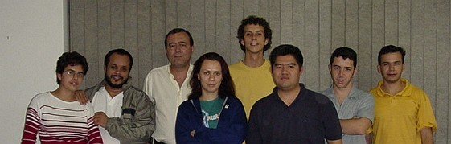

Em agosto de 2003, saí da minha toca em Florianópolis para ir a São Paulo ministrar um curso de programação em Shell de uma semana na empresa 4Linux. Foi a primeira vez que viajei à trabalho e a primeira vez que fui "professor".
Este documento descreve como foi essa experiência. É uma história, um depoimento pessoal, e não um documento técnico ou descritivo do curso.
O Início
Tudo começou 2 meses antes, no início de maio, no IV Fórum Internacional de Software Livre em Porto Alegre. Ou melhor, começou três dias antes, quando fui demitido do emprego, resultado da "Política de Contenção de Despesas" [tm].
Como de um dia para o outro fiquei "com tempo livre", pude viajar ao Fórum tranqüilamente. Lá, dois grandes amigos, o Julio Cezar Neves (Livro de Shell) e o Rubens Queiroz (Dicas-L) me convenceram a tentar a carreira de instrutor de cursos nerds. Ambos são escolados na área e me incentivaram a seguir este caminho. Com duas personalidades como estas dizendo que sim, como eu poderia dizer não? :)
Eles fizeram o contato com a empresa 4Linux e algumas semanas depois a idéia do curso tinha virado um projeto real! Ficou decidido que seria sobre Shell, mas um Shell Avançado, para quem já faz Scripts e quer realmente dominar o assunto. Ficou acertado um total de 40 horas em 10 aulas, a serem ministradas de manhã e à tarde na semana dos dias 4 a 8 de Agosto de 2003.
A Apostila
Tive que escrever do zero uma apostila completa, que após 85 horas de trabalho ficou pronta. A ferramenta utilizada no processo foi o txt2tags, é claro. Escrevi apenas texto, e o programa o converteu para HTML, que por sua vez foi convertido para PDF pelo excelente htmldoc.
Só que me empolguei, e no final a "apostila" acabou se tornando um quase-livro de 108 páginas no tamanho A4 :) Este é o resumo de seu conteúdo:
- Revisão do Básico
- Programas Não São Scripts
- Explorando as Possibilidades do Shell
- As Ferramentas do Sistema
- Caracteres de Controle
- Expressões Regulares
- Arquivos de Configuração
- Banco de Dados com Arquivos Texto
- Interfaces Amigáveis com o Dialog
- CGI em Shell
Os assuntos foram descritos de maneira completa, e não como uma simples lista de tópicos. A idéia é o aluno poder usar a apostila como referência após o curso, tendo explicados os conceitos e sua aplicação, com vários exemplos de código funcionais.
Foi minha primeira vez escrevendo uma apostila, e tive a sorte de fazer algo que agradou. Tanto os alunos quanto o pessoal da 4Linux elogiaram bastante a apostila, dizendo ser bem escrita, completa e com conteúdo. Parece que meu tiro acertou algo :)
Todos os detalhes sobre a apostila, índice, amostra e informações de venda avulsa estão nesta outra página.
A Viagem
Já fazia mais de 10 anos que eu não viajava de avião. De repente lá estava eu no aeroporto da ilha, num domingo ensolarado, tendo que me despedir.
Uma despedida dura, para embarcar numa viagem a um lugar desconhecido, para ficar uma semana fora trabalhando em algo que eu nunca tinha feito antes. Bem... Como ter me mudado para Floripa e casado já tinha sido uma bruta mudança de vida, essa semana não poderia ser assim tão difícil &;)
Avião é MASSA! Detona! A ilha foi ficando pequena, deu pra ver Canasvieiras inteira, nossa rua, nosso telhado... Depois as nuvens, ficar acima delas... Caramba, voar é MUITO MASSA.
Chegando em São Paulo, fui direto ao Hotel Century Paulista que (ainda bem!) ficava na frente da 4Linux, mas na frente mesmo, bastando atravessar a rua para "ir ao trabalho".
A Turma
Primeiro dia. O curso estava marcado para começar às 09:00, mas cheguei antes para conhecer o local, as instalações, etc. Uma sala normal, pequena, com quadro branco, uma televisão e nove computadores.
Logo de manhã, a primeira surpresa: apenas quatro alunos confirmaram a presença. Os outros quatro desistiram na última hora e não deu tempo de preencher as vagas com a lista de espera... Foram escalados três funcionários da 4Linux para aproveitar os lugares vagos.
Segunda surpresa: dos sete alunos, dois eram mulheres. Eu nunca tinha conhecido nenhuma mulher que 1) usasse a linha de comando e 2) gostasse de programar em Shell, e de repente estava com duas dessa espécie em minha turma. Vida longa aos nerds de todas as espécies!

Outros alunos me chamaram a atenção por sua grande vontade de fazer o curso. Um veio láááááá de longe, de Fortaleza, enfrentando mais de 5 horas de vôo com muitas escalas. Outro era um carioca que no auge dos seus 50 anos de idade, já tinha tantos anos de Informática quanto eu tenho de vida, e para mim foi uma honra poder lhe ensinar algo novo.
Por falar em idades, o resto dos alunos tinham todos seus vinte e poucos anos. As motivações que os levaram a fazer o curso eram variadas, mas todos usariam o conhecimento adquirido em Shell em seu trabalho.
A Mudança
Já na primeira aula após a conversa inicial com a turma, algo inesperado: a maioria ainda não tinha o conhecimento básico necessário para absorver o conteúdo da apostila.
Olha a situação: de cara, já em meu primeiro curso, tive que simplesmente abandonar o cronograma planejado para as aulas e guiar o curso conforme o progresso dos alunos.
O famoso "nivelar por baixo" teve que ser feito, caso contrário, de que adianta simplesmente mostrar conteúdo se quem está ouvindo ainda não está preparado para recebê-lo? Como resultado, a revisão do básico que era para durar 3 horas acabou se estendendo por 16 (2 dias).
Toda esse mudança foi conversada com os alunos já na primeira aula, e com o seu consentimento, a ordem das aulas da apostila foi esquecida, e os tópicos foram sendo vistos na prática, durante o desenrolar dos exercícios feitos em aula.
Outra mudança foi a decisão de começar as aulas mais cedo (08:30), encolher um pouco o almoço e os intervalos, e ficar até um pouco depois das 18:00 horas. Com isso, ao invés de oito foram nove horas por dia de aulas, estendendo o curso para 45 horas para que todo o conteúdo pudesse ser visto.
Mesmo com as horas extra de aula, infelizmente não sobrou tempo para o proposto da última aula, que seria cada aluno fazer um programa completo e apresentá-lo à turma. Novamente foi conversado com os alunos e eles decidiram que ver todo o conteúdo da apostila era mais importante que o programa final.
O Decorrer
Nos dois primeiros dias foi feita a revisão do básico. Mas foi uma revisão diferente.
Foram passados 10 exercícios relativamente simples para quem já conhece Shell, mas desafiadores e didáticos para o aprendizado, pois envolviam raciocínio e uso das estruturas da linguagem e das ferramentas do sistema. A revisão só acabou quando todos os alunos conseguiram fazer todos os 10 exercícios.
Durante a explicação de cada exercício e a análise das soluções, vários tópicos que estavam planejados para serem vistos adiante foram adiantados e trazidos à discussão, como ferramentas do sistema e Expressões Regulares. Isso agilizou o desenrolar do curso.
Terminada a revisão, vimos vários tópicos de programação profissional, como cabeçalho, comentários, código limpo, uso de variáveis, funções, histórico de mudanças e versionamento.
Em seguida, foram vistas com detalhes as 25 ferramentas mais importantes de um ambiente UNIX/Linux, suas opções mais úteis e onde e como aplicar cada uma delas.
A última ferramenta vista foi o sed, e logo em seguida foi
arrematado o assunto de Expressões Regulares. Foi unânime a opinião de
que estes foram os assuntos mais difíceis de digerir. Olha que até eu
saí meio zonzo depois dessa aula &;)
Mas após judiar da turma com os assuntos complexos, no dia seguinte foi a aula mais legal segundo opinião dos alunos. Também pudera, a aula foi brincar de mover o cursor e mostrar letras coloridas com os caracteres de controle, além de um aprendizado completo do Dialog, ensinando como fazer interfaces mais agradáveis ao usuário.
Depois foi visto em profundidade como utilizar arquivos de configuração em programas Shell, com os alunos fazendo seus próprios "parsers" para extrair as chaves e valores, bem como os aplicativos que o utilizam. De quebra, estes aplicativos foram incrementados com --opções de --linha de --comando.
Para finalizar, uma passada completa em CGI, com dicas de configuração do Apache, explicação do conceito usando a interface do Google e prática onde cada aluno escreveu seu próprio CGI e o formulário de comunicação entre o programa e o usuário. Mais uma aula divertida e que caiu no gosto da turma.
Como o tempo estava acabando, o último assunto a ser visto: Banco de Dados em Arquivos Texto, foi prejudicado e teve que ser passado de maneira rápida, sem tempo de prática para os alunos.
O Desfecho
Sexta-feira, fim do dia, cada aluno ganhou uma folha em branco e foi pedido para que escrevessem de maneira sincera qual foi a opinião sobre o curso de Shell e se os resultados esperados foram atingidos.
Eu guardei os papéis para ler em casa somente e fiquei muito satisfeito ao constatar 100% de aprovação. Incrível! Em um curso que foi planejado de um jeito e acabou saindo de outro :)
Seguem trechos dos depoimentos:
"Material de apoio muito bem pensado e bem dimensionado. Os exemplos ricos e também bem pensados. A dinâmica do curso foi um pouco ruim pois você nivelou por baixo. O ideal é fazer uma média pois sempre haverá alunos dinâmicos e alunos perdidos. No mais, foi muito bom!!" "O que mais gostei foi a lógica. Normalmente programamos metodicamente buscando a consistência, e alguns bons exemplos seus através de inconsistência gerávamos uma consistência. Eu sempre montei script pensando base na consistência, e não aproveitava os recursos do UNIX." "O curso é bem legal, porém os próximos deverão ser direcionados para um nível mais iniciante [...] Cursos de Shell Script são raros de se achar. Quando se encontra um, mesmo que seja avançado, os principiantes não irão perder a oportunidade de fazer o curso também. Foi o meu caso. Resultado: Muito bom." "Gostei bastante, mas pena que durou apenas uma semana, pois o conteúdo é extenso e para que seja possível absorver 100%, será necessário de no mínimo um mês. Aurelio, a sua didática é boa, e espero que a cada dia melhore mais [...] Resultado: Ganhei bastante conhecimento e tirei bastante dúvidas sobre Shell." "O curso de Shell obteve um grande nível técnico e didático. [...] Aprendi que posso melhorar ainda mais minha lógica, meu raciocínio. Acho que o curso poderia ser estendido mais 1 ou 2 dias. Resultado: Ótimo, não tenho palavras... Agora é aplicar no dia-a-dia. Foi muito proveitoso e comecei a entender melhor o real siginificado de Shell Script." "Curso nota 1000! [...] Aurelio, você está de parabéns com P gótico! [...] Com certeza será muito útil no meu trabalho. Obrigado mesmo." "O curso foi ótimo, muito bem elaborado e com riqueza de detalhes técnicos, um nível técnico muito aprofundado, algo que realmente falta aos cursos de hoje. [...] Poderíamos ter evoluído mais em Dialog. Resultado: Ótimo, descobri o que queria, o poder do Shell, sed e ERs, que já começaram a me poupar tempo e mostrar melhor como funciona o sistema." "Curso de ótima qualidade, o instrutor tem uma didática incrível. Bem estruturado!!! Material muito bem feito e auto didata. [...] Tomar cuidado para não deixar o curso fraco ou cansativo por causa do alunos MUITO atrasados!!! Resultado: Adorei o curso!!! Até comecei a achar que posso PROGRAMAR..."
A Conclusão
Eu considero que este curso foi um sucesso total.
A viagem e o dinheiro que ganhei foram bons, mas o principal foi ter um desafio vencido com aprovação total dos interessados.
- Os alunos disseram ter gostado e saído satisfeitos;
- O pessoal da 4Linux me tratou super bem, elogiou a apostila e a conduta, manifestando interesse em outros cursos no futuro;
- Eu gostei da experiência, me senti à vontade como "professor", e pude até aprender junto com os alunos, que considero novos amigos.
Curiosidades
As aulas foram feitas escrevendo no quadro-branco com minha letra horrível e a saída do meu computador aparecia numa televisão (acho que 18").
Eu falo a palavra "então" toda hora, não tem jeito, quando vejo ela já saiu :)
Houve um problema chato de troca de HDs durante o curso pois todos eram "plugáveis" e cada dia eles apareciam em máquinas diferentes. Nesse troca-troca alguns scripts feitos pelos alunos durante o curso simplesmente sumiram :(
Outro problema chato é que as máquinas da sala não eram idênticas. Era Red Hat numa, Debian na outra, o Vi funcionava com sintaxe aqui, ali não... Perdeu-se tempo com configurações e trocas de máquina.
O incrível é que mesmo para os exercícios mais simples, praticamente cada aluno fazia uma solução distinta, fazendo com que todos aprendessem várias maneiras de se pensar e resolver um problema.
O maior tropeço no aprendizado de Shell, o que dá o maior nó na cabeça de todos, é sem dúvida as aspas 'simples', "duplas" e as
crases, é uma confusão só.Machistas, revoltai-vos! No dia de fazer o "parser" para arquivos de configuração e o aplicativo, que foi a tarefa mais complexa de todo o curso, as duas meninas foram as primeiras da turma a terminar.
Haviam dois "coffee breaks" todos os dias fornecidos pela 4Linux. Os sanduíches e salgados eram muito saborosos. E o melhor: à tarde tinha sorvete de palito, massa!
Ganhei de um aluno um CD com vários mp3 e clipes de bandas novas, do chamado New Metal, como Korn e Linking Park, pois estou muito desatualizado musicalmente. Ganhei também dois broches do grupo LinuxChix!
No final do curso, foi lançado um desafio aos alunos, em que o primeiro que me mandasse por e-mail todos os 10 primeiros exercícios resolvidos em menos de 80 caracteres, ganharia um exemplar do meu livro de Expressões Regulares. Machistas, revoltai-vos novamente! O vencedor do desafio foi uma aluna.
A muié me fez comprar duas calças "ajeitadas" para dar o curso, pois disse que minhas calças de agasalho toscas poderiam prejudicar minha imagem perante os alunos. Levei e tive que usar, fazer o quê... :)